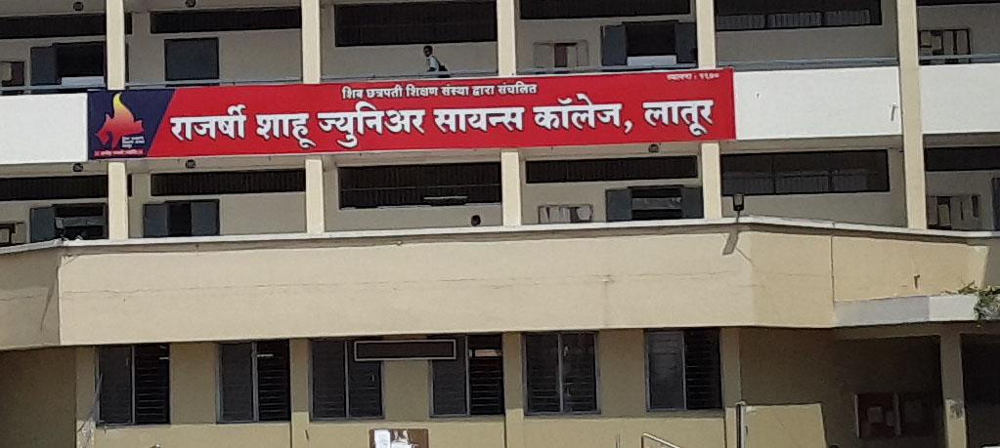

Privatization, Globalization and Liberalization has brought tremendous changes in the field of Commerce and Management studies. The economies of the nations whether developed or progressive depend upon the growth and development in the field of industry, business, commerce, trade and other related economic and business activities. The Commerce as a field of study offers a vast variety of subjects ranging from Financial Accounting, Management Accounting, Cost Accounting, Corporate Accounting, Auditing, Taxation, Business and Managerial Economics, Banking and Finance, Insurance, Retail Management, Business Communication, Financial Management, International Business Environment, Computer Application in Business, I.T. enabled services, Organizational Behaviour, Strategic Management, Human Resource Management, Corporate Law, E-Commerce and what not! Commerce and Management education offers tremendous opportunities for students aspiring to become entrepreneurs or to provide consultancy services in the field of Accounts, Finance, Management, Taxation and Stock Market Operations. It also caters to the needs of students who want to become professionals like CA, ICWA, CS, MBA, CFS, CFA, etc. Commerce as a discipline enables the students to become employable in various spheres of economic and business activities. The knowledge of commerce also provides the students tremendous opportunities in the field of ever increasing needs of the service sector, which contributes 60% share in the GDP of the nation. The department offers B.Com. with Banking & Finance and Entrepreneurship Development as optional subjects. At the Master level M.Com. with specialization in Advanced Banking & Finance and Marketing Management. The Board of Studies of Commerce Faculty strives for excellence in curriculum development by incorporating recent changes and requirements of various stakeholders.
Thus, in order to enhance the employability of students the department introduced subject like Entrepreneurship, Banking, E-commerce, Retail Management, Financial Management, etc. Similarly, skill enhancement course like Tally ERP0.9, Office Automation, Hardware Maintenance, Soft Skill for B.Com. II year students and Goods and Services Tax, Disaster Management and Office Management for B.Com. III year students are incorporated in the curriculum as skill enhancement course. In order to develop life skills of the students, the department carries out various extracurricular activities through an association of commerce students called ‘Commerce Association’. For improving leadership and organizing skill of students, the Commerce Association organizes various programmes such as Career Guidance, Workshops, Skill enhancement programmes like Exhibitions, Dandiya Competition, Handicraft Exhibition, Mehandi and Rangoli Competition, Poster Presentation, Study Tour, Faculty Day, etc.The department is a recognized research center of S.R.T.M. University, Nanded for Ph.D. research work. The faculty also undertakes Minor and Major Research Projects in the field of Commerce and Management. There are 14 research students pursuing Ph.D. under the guidance of Dr. P.N. Sagar, Dr. A.J. Raju, Dr. S.J. Kulkarni and Dr. P.G. Kawale.. RSML started Biotechnology UG and PG under visionary of Dr. Gopalrao Patil and Directorship of Prof. Vishwas Shembekar, which gives major turn to the College in terms of Research & Development at National and International level. Alumni of this Department are spread throughout the globe and doing research with cutting edge technologies and contributing in the Global Science knowledge. The college has more than four thousand students (including Junior College) on the roll. The total staff includes 77 teachers in the Senior College, 78 non-teaching staff and 63 teachers in the Junior College (Class 11 and 12). The college mainly conducts preparatory courses for the following competitive entrance examinations: MHT-CET, AIEEE (All India Engineering Entrance Examination), MPSC (Maharashtra Public Service Commission), MBA (Master of Business Administration) and MS-CIT (Maharashtra State Certificate in Information Technology). There are 21 departments including 7 Post Graduate departments. The college also offers courses such as Russian language, Additional English (second language), Sanskrit, Pali and Functional English (a vocational subject), M.Phil (Geography). The teachers of Marathi, Pali, Geography, Economics, Sociology, Chemistry, Zoology & Fishery Science, Biotechnology and Physics guide the Ph.D. aspirants. The college introduced computer courses in 1998 on a non-grant basis. It is thus catering to the needs of higher secondary and higher education in this region

RSML college is affiliated to Swami Ramanand Teerth Marathwada University, Nanded and has achieved an A grade with 89.25% and CPE status from the National Assessment and Accreditation Council (NAAC), India. The college was awarded the Best Educational Institution Award at the hands of Dr. P.C. Alexander, Governor Of Maharashtra.Rajarshi Shahu College, Latur is a higher secondary education institution in the Latur district of south-eastern Maharashtra, India. The college was a pioneer in the development of the "Latur Pattern", which has been adopted and implemented by many other colleges across the state
In 2013 College Become Autonomous. Educational Batch of the year 2013-14 is the First Batch of Degree College as Autonomous Grade.The college was established in 1970 by the Shiv Chhatrapati Shikshan Sanstha (Shiv Chhatrapati Educational Institution), Latur. Shahu's first principal was Dr.Janardhan Madhavrao Waghmare, who was the first pillar of Latur Pattern. The college has consistently produced Maharashtra State level toppers in the Higher Secondary School Certificate Examination (10+2) of the Maharashtra State Board of Secondary and Higher Secondary Education, Pune and the Common Entrance Test for four-year bachelor's degree courses in Medical and Engineering fields. The college is also famous for the Chartered Accountant's examination preparation. Students who are willing to be Chartered Accountants do their higher secondary education and a three-year bachelor's degree in Commerce stream (B. Com.) and then take the Chartered Accountant's course. There is a large contribution of this college in creating and popularizing the"Latur Pattern". Mr. Anirudh Jadhav has major contributions in creating the Latur Pattern and making it widely known throughout India. In 2004, RSML started Biotechnology UG and PG under visionary of Dr. Gopalrao Patil and Directorship of Prof. Vishwas Shembekar, which gives major turn to the College in terms of Research & Development at National and International level. Alumni of this Department are spread throughout the globe and doing research with cutting edge technologies and contributing in the Global Science knowledge. The college has more than four thousand students (including Junior College) on the roll. The total staff includes 77 teachers in the Senior College, 78 non-teaching staff and 63 teachers in the Junior College (Class 11 and 12).
The department has undertaken the students projects in the areas of Plant Pathology, Genetics, Plant Biotechnology, Medicinal Plants, Aerobiology etc. Presently the department started M.Sc. Degree Course in the academic year 2017-18. The M.Sc. degree course is spread over four semesters. At present the students are admitted to M.Sc. degree course on the basis of their scores in the B.Sc. degree.
During the first year of M.Sc., the students are taught core courses in Botany. In the second year, besides the core courses, the students also carry out the projects. The examinations of B.Sc. and M.Sc. students are held as per the credit system rules laid down by the autonomous college. It involves continuous assessment that is internal assessment and semester end examination. The curriculum of B.Sc. and M.Sc. has been designed by taking into account the competitive examinations, NET and SET examinations.